CROSSROADS
どの店に入る？
渦をぬけると、そこは見知らぬ十字路。北に森の店、西に城下町の店、東に霧の店が待っている。
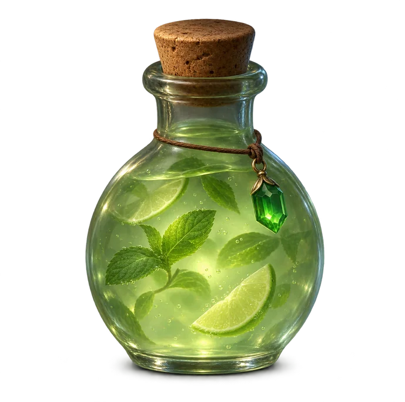
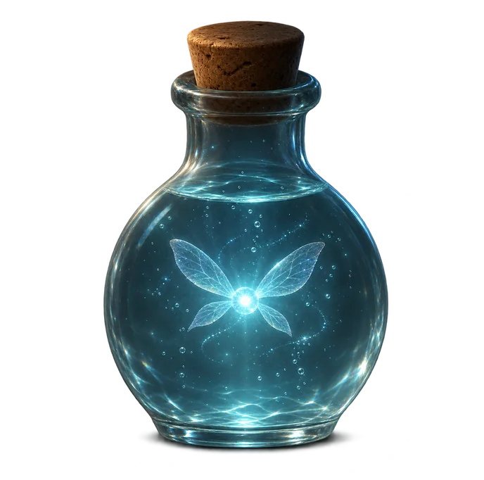
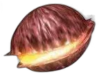
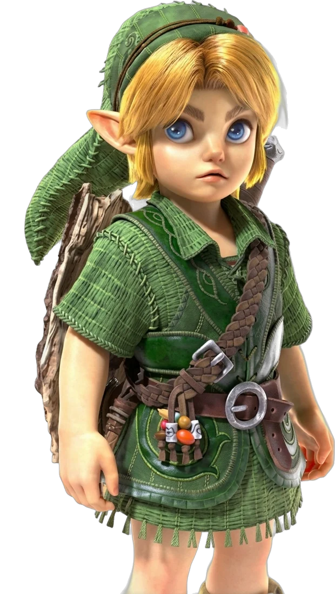
NORTHコキリのショップ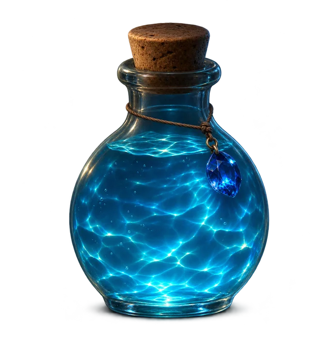
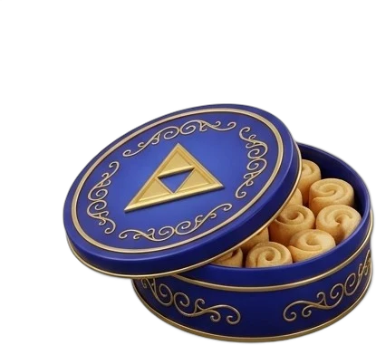
WESTハイラルショップYOU ARE HERE時のはざまの
十字路
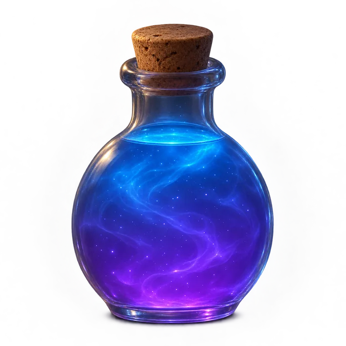
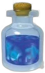
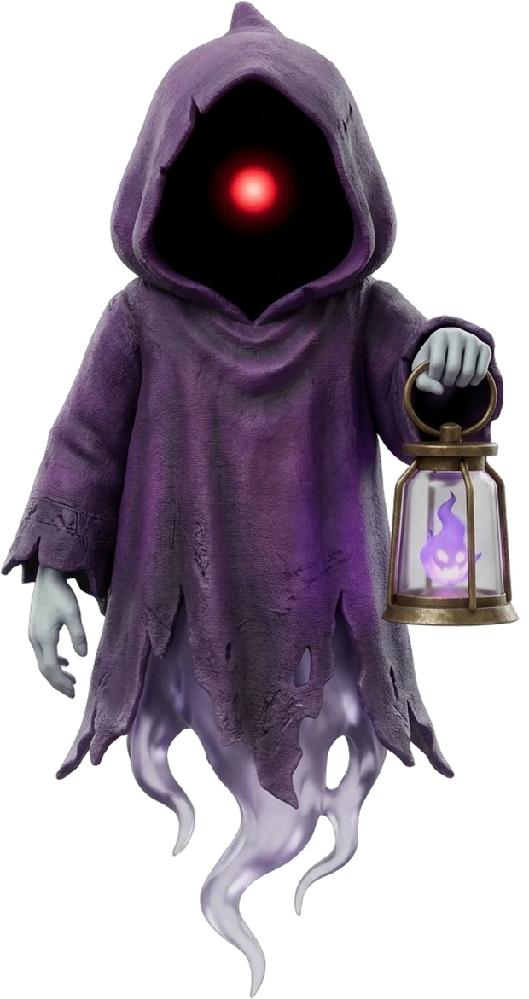
EASTゴーストショップ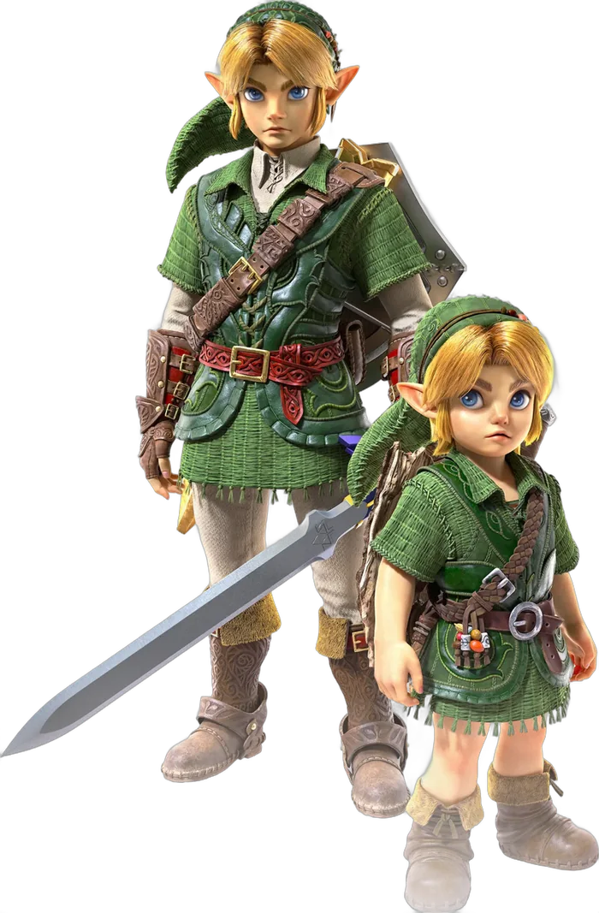
入口（いまここ）TODAY'S PICK
きょうの おすすめ
三つの店から、店員たちのイチオシを集めました。
HOW TO SHOP
買いものの流れ
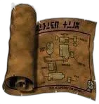
店をえらぶ
十字路から、気になる店の扉をくぐろう。店員が出むかえてくれる。
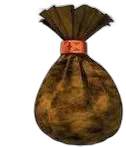
ふくろに入れる
ほしい品を手にとって、ふくろへ。三つの店の品をまとめて買える。
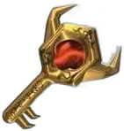
宝箱をひらく
注文を確かめたら、宝箱をあけて完了。（このサイトの注文はデモです）
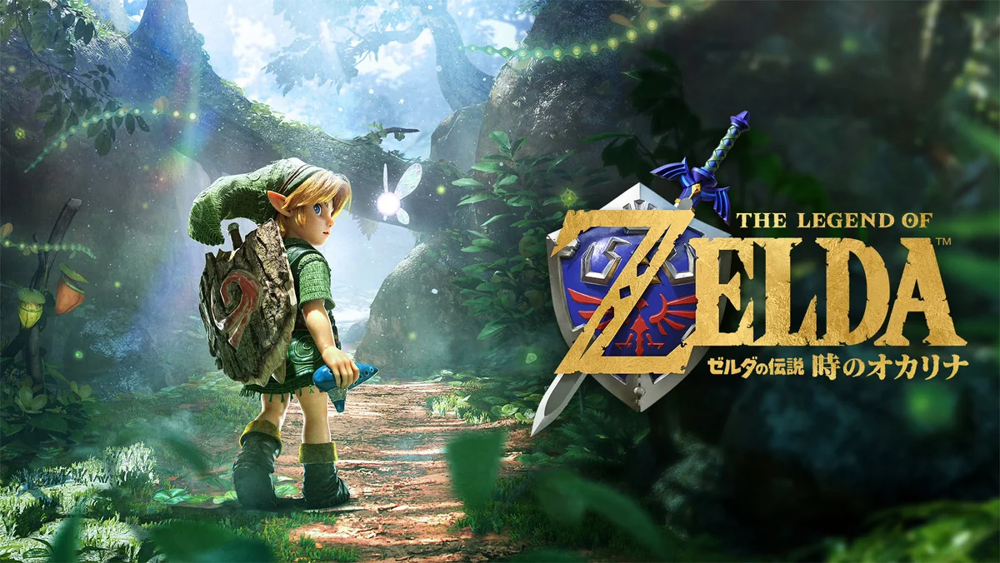
ABOUT
あの冒険の記念に、
あの冒険の記念に、
小さな市場をひらきました。
「時のオカリナ」の世界に入りこんで、現実のドリンクやお菓子を選ぶ――そんな遊びを形にした、個人用のファンサイトです。並んでいる品はすべて実在の商品。気に入ったら、各商品ページから公式の販売先をさがせます。
ご利用ガイド